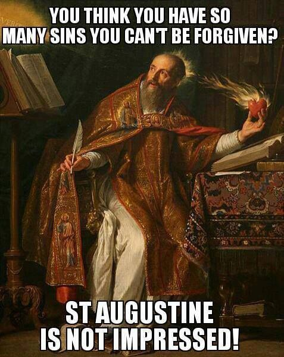
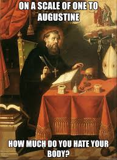

Problem: zašto baš „država“ Božja? (Država- zakonom uređena zajednica.
Čemu potreba za zakonom ukoliko članovi zajednice tj. sveci, anđeli
itd. sami jesu moralni? )
Avgustinova vs Platonova država (Platonova država kao moguća u
ovozemaljskom svetu, Avgustinova država kao apsolutno neostvariva u
materijalnom svetu, ali već postojaća u onostranom svetu)
Avgustinov vs Danteov raj (jednakost u ovozemaljskom svetu gde su svi
jednaki pred Bogom, a nejednakost u onozemaljskom, jer su učinjena
dela tokom života ta koja prave hijerarhiju među stanovnicima Raja.
Postojanje hijerarhije među anđelima samim (anđeli, arhanđeli,
serafimi itd.))
Drugačije shvatanje rajske i zemaljske hijerarhije (u raju ne postoje
negativne emocije poput zavisti, već razumevanje da svako dobija svoj
položaj po zasluzi)
u Danteovom raju je Toma Akvinski na četvrtom nebu gde su duše učenih
ljudi (zajedno sa Bonevanturom), dok je duša Avgustina na nižem
{{nisam 100%siguran}}
Zašto Avgustin debatuje o zlu na kraju dela?
Zlo kao provera pravednika, civitas dei- stanje bez zla
Nije u fokusu istraživati poreklo i supstanciju zla (kao u Ispovestima), već zlo istraživati kao test iskušenja od kog zavisi ulazak u Raj
Slobodna volja biće još slobodnija, jer neće postojati greh i žudnja
Shvatanje slobode iz dela O slobodi volje: Slobodna volja mora da postoji kako bi Bog na pošten način, na osnovu naših dela slao individue u raj tj. pakao. Da slobodne volje nema, naš odlazak u raj tj. pakao bi bio upitan. Kad smo već u Raju, ta činjenica implicira da smo slobodnu volju koristili u “dobre svrhe” i stoga, naša volja biva apsolutno oslobođena svih zala i biva slobodna da večno bira dobro
Citati
"Kakav će biti duh oslobodjen svih poroka kojem bi bio podložan, kojem bi mogao popustiti, protiv kojega bi se makar čestito borio, savršen u krajnje spokojnoj vrlini! Koliko će tamo biti veliko znanje o svemu, kako divotno, kako pouzdano, van svake nastranosti ili napora tamo dge ce se na samom izvoru napajati mudrošću božjomsa najvećom srećnošču, bez ma kakve poteškoće! Kakvo će biti naše telo koje će u potpunosti biti duhu podvrgnuto i njime u dovoljoj meri prožeto životomda mu neće biti potrebna nikakva hrana! Ono naime neće više biti životinjsko, nego duhovno, doduše zadržavajući suštinu puti, bez bilo kakve putene propadljivosti“ Država Božja str 992.
Šta je doista naš cilj nego dospeti do kraljevstva bez svršetka?“ Država Božja str. 1005.
Memovi

